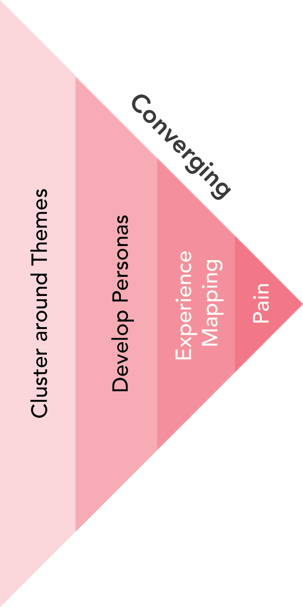
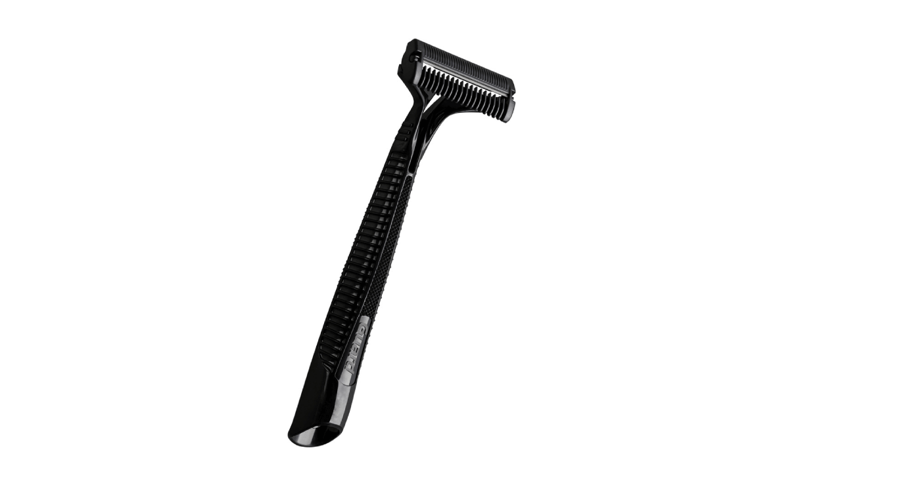
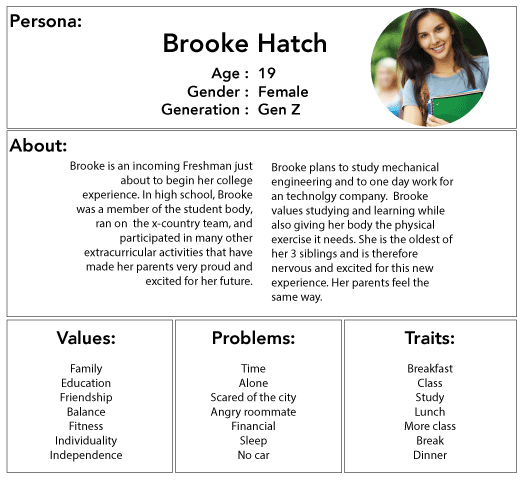
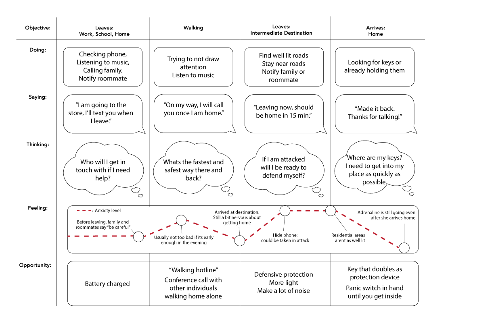

5 Hypothesize Customer Pain
Abductive convergence through empathy tools to hypothesize an unknown, unmet need (pain) in the lives of your people
5.1 Integrating Empathy and Abduction to Define Unmet Needs
 The synthesis of data from exploratory, ethnographic research into a structured understanding of unmet needs is a crucial convergent process, culminating in hypotheses about these needs. Empathy and abduction work in tandem to illuminate these needs.
Empathy Analysis to Imagine Needs
Empathy is central to identifying unmet needs, involving deep engagement with the community to understand their experiences, struggles, and desires. This understanding is key to recognizing opportunities for innovation.
Tools of Empathy in Innovation
Design thinking offers formal tools for employing empathy to generate hypotheses of unmet needs:
- Cluster around Themes: Organize data into thematic categories.
- Persona Development: Create profiles for typical individuals within each theme.
- Experience Mapping: Visually depict the persona’s interactions and touchpoints within the broader activity context.
- Generate Hypotheses of Customer Pain: Identify the most significant touchpoints and interactions for the persona, leading to multiple initial hypotheses of unmet needs. This is the beginning of hypothesizing through abduction.
Abduction to Hypothesize Needs
Adapting abduction to hypothesize potential pains or needs based on empathetic insights allows for a structured approach to hypothesis formation.1
Abductive Reasoning Process in Innovation
- Observation and Empathy: Begin with empathetic engagement, identifying potential unmet needs.
- Formulating Hypotheses: Generate hypotheses from these insights.
- Evaluating and Refining: Critically assess and refine these hypotheses to align with the community’s experiences.
- Selecting the Most Plausible Hypothesis: Opt for the hypothesis that most effectively addresses the needs, balancing empathetic insights with logical coherence.
The Symbiosis of Empathy and Abduction
Combining abduction with empathy tools equips entrepreneurs to hypothesize solutions that resonate with their target community’s needs. This approach fosters a grounded and creatively inspired innovation process, ensuring solutions are deeply connected to the community’s real experiences and challenges.
Revisiting Gillette in India: Empathy and Abduction
The Gillette case in India presents a compelling illustration of how empathetic engagement and abduction can work hand in hand to uncover and address unmet needs. Gillette’s journey reflects the process of moving from broad observations to specific, actionable insights through a series of well-planned steps.
Empathetic Insights:
Gillette’s team immersed themselves in the environment and routines of their potential customers. They conducted in-depth primary research including interviews, in-home visits, and observing shaving routines. These activities provided them with rich, empathetic insights:
- Living Conditions: Many families lived without electricity.
- Shaving Habits: Men often shaved sitting on the floor with a bowl of water.
- Challenges Faced: Frequent cuts and difficulty in handling razors, especially with longer hair due to less frequent shaving.
Hypotheses Formulation:
From these empathetic insights, Gillette could formulate several hypotheses about the unmet needs of Indian men:
- Safety Concerns: Indian men suffer physical pain due to frequent cuts with safety razors and functional pain because the shaving experience takes longer and is less enjoyable.
- Ease of Cleaning: Indian men suffer a functional pain in the difficulty of rinsing the blade without running water.
- Appearance Management: Indian men suffer social pain as shaving is a mark of personal A need for a razor that can efficiently handle longer hair.
- Ergonomics: Indian men suffer functional pain from non-specialized grips that are ill-suited for the common posture of shaving while sitting on the floor.
Evaluating and Refining Hypotheses:
Gillette likely evaluated these hypotheses by considering their feasibility, relevance, and the potential impact on improving the shaving experience. This evaluation would have involved cross-checking these hypotheses with their existing knowledge of razor design and shaving habits in different contexts.
Selecting and Implementing the Hypothesis:
 Gillette chose the hypotheses that most reasonably explained the unmet needs of Indian men and developed the Gillette Guard. The Guard’s features directly addressed the hypothesized pains:
- Single Blade: To manage longer hair and reduce cuts.
- Special Handle: For a better grip and control, considering the sitting posture during shaving.
- Lightweight and Cost-effective: Making it accessible to a larger segment of the Indian market.
Results:
The success of the Gillette Guard in the Indian market, growing its market share significantly, validates the effectiveness of Gillette’s approach. By empathetically engaging with their target market and using abduction to hypothesize and refine their understanding of unmet needs, Gillette was able to innovate a product that resonated with the specific requirements of Indian consumers.
Gillette’s case in India serves as a textbook example of integrating empathy with abduction in the innovation process. It underscores the importance of deeply understanding the context and nuances of your target market, formulating hypotheses that address specific pains, and then refining these hypotheses to develop solutions that meet those needs effectively.
5.2 Empathy Analysis
Empathy analysis is a crucial step in understanding the unmet needs of your target community. It involves immersing oneself in the experiences, struggles, and aspirations of the people and identifying patterns that emerge in their stories. This section details the process of empathy analysis, starting with clustering data into themes.
Clustering into Themes
Organizing your collected data into themes is the first step in structuring your mountain of unstructured data. This involves identifying common patterns in the lives you studied, focusing particularly on the pains of your customers.
Downloading Data
Downloading involves transforming research notes into individual observations:
- Review your research findings.
- Write each observation or insight on a separate note.
- Collectively place all notes on a board, initially without sorting or structuring.
- Discuss observations as you go, allowing themes to start emerging organically.
Affinity Mapping
Affinity mapping adds structure by clustering similar observations:
- Start by placing a note on a wall or board to form the first cluster.
- For each new note, decide if it aligns with an existing cluster or starts a new one.
- Continue until all notes are categorized into clusters.
- Name and characterize each cluster, focusing on commonalities.
Identifying Themes
Deepen your understanding of each theme with key details:
- Highlight common words, emotions, and obstacles expressed by your customers.
- Incorporate insightful quotes from interviews.
- Note any surprises or contradictions.
- Acknowledge key differences among customers.
- Summarize central themes, especially those related to unmet needs.
These themes are the seeds of hypotheses about the pains your customers face, considering all facets of their lives.
Developing Personas
Creating personas is a key step in empathizing with the target community. A persona is a fictional but representative character that embodies the typical attributes, values, and behaviors of your target group. This helps in visualizing and focusing on the specific needs and experiences of your community.
Steps to Build a Persona
The process of developing a persona involves the following steps:
Naming the Group: Start by giving a descriptive name to the group that your persona represents.
Creating a Fictional Name: Assign a fictional name to your persona to personalize it, while ensuring privacy and anonymity.
Visual Representation: Use a stock photograph or a sketch to give a face to your persona, aiding in making the persona more relatable and real.
Listing Characteristics: Detail the persona’s demographic and psychographic characteristics such as age, occupation, interests, and lifestyle.
Values and Aspirations: Enumerate what the persona values and cares about, their goals, aspirations, and motivations.
Narrative Sketch: Write a brief narrative or story of their life, incorporating elements from your research and observations that reflect their experiences and challenges.
Example Persona: Brooke Hatch

The persona of Brooke Hatch serves as an example. Brooke, a new college student, personifies the common concerns and objectives of her demographic, like safety while walking alone. This persona is based on insights from research on over 100 young women in a similar situation, providing a focused lens to view and address their specific needs.
Develop Personas with Caution
While creating personas is an integral part of empathizing with your target audience, it’s crucial to avoid narrowly defining them solely based on traditional demographic characteristics like gender, age, or occupation. This section revisits the concept of personas, emphasizing the need for adaptability and inclusivity.
Broadening the Persona Spectrum
The goal is to create personas that are archetypical yet flexible, representing not just a segment but the broader community that experiences the same pain or unmet need:
Avoid Over-reliance on Demographics: While demographics can be a starting point, they should not be the sole defining feature of a persona. A persona narrowly defined by age or gender might exclude others who share the same needs.
Focus on Shared Pain Points: Identify and focus on pain points and experiences that are common across a diverse range of individuals within the target community.
Adapt Personas Over Time: As your understanding of the community’s pain and needs evolves, be prepared to adapt your personas to better represent the true diversity of those affected.
Consider Broader Representations: Ensure that your personas encapsulate a wider range of individuals who might benefit from your innovation, even if they fall outside traditional demographic boundaries.
Example: Revisiting Brooke Hatch’s Persona
Reconsidering the persona of Brooke Hatch, it’s important to ensure that while she represents young college women concerned with safety, the insights derived from her experiences are also applicable to a broader audience who might share similar concerns, regardless of age, gender, or other demographic factors.
The Pitfalls of Narrow Personas
Narrowly defined personas can lead to missed opportunities for innovation. For instance, a consumer goods company focusing exclusively on women aged 25-45 might overlook innovative ideas that could appeal to a wider audience, including men and older individuals. This oversight can result in a reactive rather than proactive approach to market changes and innovations.
Experience Mapping
Experience mapping, also known as journey mapping, is a tool to delve deeper into customer pains by visualizing their experiences while trying to achieve a particular objective. This process is particularly useful for understanding the nuances and challenges faced by customers at different stages of their interaction with a product or service.
Steps to Create an Experience Map
Creating an experience map involves several key steps:
Define the Customer’s Objective: Clearly state the goal the customer is trying to achieve, such as commuting home from work, exercising, or purchasing inventory.
Identify Key Stages: Break down the customer’s journey into distinct stages that they progress through to achieve their objective.
Organize Ethnographic Data for Each Stage: For each identified stage, refer to your ethnographic and empathy map data to analyze:
- What the customer is saying at this stage.
- What actions the customer is taking.
- The customer’s thoughts during this stage.
- The customer’s feelings and emotions.
Identify Opportunities for Pain Relief: From this analysis, pinpoint opportunities to alleviate customer pain points, considering how existing solutions might be falling short.
Example: Experience Map for Female College Students

This experience map demonstrates the journey of female college students, like Brooke Hatch, concerned with safety while walking alone. This map was constructed from ethnographic data gathered from approximately 130 young women. It illustrates the varying levels of anxiety experienced by Brooke at different stages of her journey, offering insights into potential interventions to enhance safety for women walking alone.
Generating Hypotheses
The experience map, with its detailed insights into what personas are doing, saying, thinking, and feeling, serves as a fertile ground for generating hypotheses about unmet needs. Particularly revealing are the emotional states of the persona, as strong emotions often signal underlying unmet needs.
Focusing on Emotional Insights
Emotions, especially those indicating discomfort or anxiety, can be key indicators of unmet needs. These emotional low points in the experience map are prime areas for hypothesis generation. Consider these steps:
Identify Emotional Peaks and Valleys: Look for stages in the experience map where emotions are intense or anxiety is high. These are potential areas where needs are not being met effectively.
Combine Multiple Elements: While emotions are a starting point, combine insights from what the persona is saying, doing, and thinking to form a comprehensive view. This holistic approach helps in understanding the context and depth of the unmet need.
Formulate Hypotheses: Based on these observations, formulate hypotheses about potential unmet needs. These hypotheses should address why the persona experiences certain emotions and how their needs might be better met.
Prioritize Emotion-Driven Insights: While all elements of the experience map are valuable, prioritize hypotheses derived from emotional insights, as they often lead to more profound and impactful innovations.
Example: Hypotheses from Emotional Lows
In the experience map of Brooke Hatch, periods of high anxiety while walking alone can lead to hypotheses around safety, connectivity, or even community support. Each of these hypotheses can then be explored further to develop solutions that address these specific emotional pain points.
5.3 Formulating Hypotheses about Customer Pain through Abduction
Abduction in the context of innovation focuses on hypothesizing potential pains or unmet needs based on empathetic insights. This section elaborates on the practical steps of formulating, refining, and selecting hypotheses, with a specific emphasis on identifying pain as the core of unmet needs.
Problem vs. Pain: Focusing on Unmet Needs in Abduction
In the process of abduction, where we hypothesize the most plausible explanation for observed phenomena, it is crucial to differentiate between problems and pains. Problems represent the gap between the current state and the desired state, while pains are the personal costs or losses individuals suffer due to these problems.
Understanding Pain as Personal Cost
The concept of pain in this context goes beyond physical discomfort, encompassing functional, financial, emotional, and social dimensions:
- Physical Pain: Direct, literal pain caused by a problem.
- Functional Pain: Difficulties and obstacles introduced by a problem in daily activities.
- Financial Pain: Economic burdens resulting from a problem.
- Emotional Pain: Negative emotions and identity challenges stemming from a problem.
- Social Pain: Reduced social standing or difficulties in social interactions due to a problem.
The Importance of Residual Pain
Innovation should focus on residual pain, which remains after existing solutions have been applied. Understanding and targeting this residual pain is key to developing effective solutions.
- Identifying Residual Pain: Look for pain points that current solutions fail to address fully.
- Evaluating Market Solutions: Assess if existing market solutions genuinely solve the problem or leave significant pain unaddressed.
Case Study: Celiac Disease and Gluten Intolerance
Consider celiac disease, where the problem is the body’s immune response to gluten. The pain, however, is multifaceted, including physical discomfort from gluten consumption, functional challenges in diet management, social and emotional impacts of dietary restrictions, and financial burdens of purchasing gluten-free products. Innovating for celiac disease involves addressing these diverse pain points, not just the underlying medical problem.
Identifying People with Pain as Target Customers
Identifying the true customers is pivotal in solving their pains effectively. This involves refining our focus from broader unmet needs to specific pains, and consequently, narrowing down to those who genuinely suffer from these pains and are willing to invest in solutions.
Avoiding Common Errors in Customer Segmentation
While traditional demographic segmentation (age, gender, race, geography) can be a starting point, it often falls short in accurately defining the customer base suffering from a specific pain. Innovators must look beyond these boundaries to understand the real pains that cut across demographic lines.
Multi-Sided Customer Platforms: Beyond the User-Payer Dichotomy
Innovations often involve multiple stakeholders with varying influences on the purchase decision. Understanding the pains of all these parties, not just the end user, is crucial for a successful solution. For instance, a product designed for children may require addressing the concerns of both the child (user) and the parent (payer).
Streamlining the Customer Identification Process
To ensure clarity in understanding your customers:
- Conduct Targeted Surveys: Use surveys to gather information about the characteristics of potential customers. Focus on those who demonstrate a high willingness to pay and refine your customer definition based on this data.
- Evolve Your Understanding: Be open to adapting your perception of the customer as you learn more about their pains and responses to potential solutions.
- Engage With Early Adopters: Prioritize interactions with visionary early adopters to validate and refine your hypotheses, as they are more likely to provide valuable insights for unproven innovations.
Steps to Hypothesize Pains through Abduction
Formulating Hypotheses: Start by generating hypotheses that address specific pains observed or inferred from your empathy analysis. There will be many hypotheses and they should be clear, focused, and directly related to the pain points identified. Be sure that these hypotheses are grounded in the dimensions of pain (physical, functional, financial, social, emotional) to avoid the pitfalls of focusing on problems.
Refining Hypotheses: Review each hypothesis critically. Do they align with the insights gained from your empathy work? Are they addressing the most significant pain points? Refine your hypotheses to ensure they are as targeted and relevant as possible.
Evaluating Hypotheses: Assess the plausibility of each hypothesis. Consider how well they explain the pains, their consistency with what you know about the community, and their potential to address the needs effectively.
Selecting the Most Plausible Hypothesis: Choose the hypothesis that most convincingly addresses the identified pains. This decision should be based on a balance of empathetic insights and logical assessment of each hypothesis’s viability and impact.
Example: Hypothesizing Pains in Brooke Hatch’s Persona
Considering Brooke Hatch’s persona, hypotheses might revolve around the pain of feeling unsafe while walking alone. In that case, a hypothesized pain might be
Hypothesis: Women who walk as pedestrians as part of their commute suffer
- functional pain: in the form of taking a longer route to avoid poorly lit streets, adding time to the commute and reducing evening leisure time;
- social pain: in the sense that friends and family share the commuter’s anxiety, often texting or calling during the commute to ensure their safety, which can add to the collective stress; and
- emotional pain: in the constant anxiety about their safety while walking, leading to heightened stress levels and impacting overall well-being and peace of mind.
5.4 Conclusion: Synthesizing Data and Generating Hypotheses
In this chapter, we delved into the crucial stages of synthesizing the mountain of data gathered during exploratory research and generating hypotheses about customer pain. The journey of innovation is deeply rooted in understanding and empathizing with the target community, which enables entrepreneurs to unearth their unmet needs and pains.
Empathy as a Foundation for Insight
The empathy analysis process serves as the foundation for identifying and understanding the pains of your target community. By clustering data into themes, developing personas, and creating experience maps, we transform raw data into structured insights. This structured understanding not only sheds light on the daily experiences and struggles of our target community but also highlights potential areas where solutions can alleviate their pains.
Abduction: Hypothesizing and Refining Pain Points
Abduction, adapted in this context, moves us from empathetic insights to the formulation of hypotheses about potential pains. These hypotheses are then critically evaluated and refined, ensuring they are in alignment with the community’s experiences. This process involves a rigorous assessment of each hypothesis’s plausibility, gradually leading us to select the most logical and coherent one. This selected hypothesis, ideally, is the one that best addresses the identified pain points, offering a viable solution rooted in the reality of the community’s needs.
The Interplay of Empathy and Abduction
The interplay of empathy and abduction in this process cannot be understated. While empathy allows us to immerse ourselves in the lives of our target community, abduction gives us a structured method to hypothesize and refine our understanding of their pains. This symbiosis is essential for entrepreneurs aiming to innovate solutions that are not only creative but also deeply relevant and effective in addressing the real pains of their target community.
In essence, this chapter has equipped us with a methodology to navigate from a vast array of data to a precise understanding of unmet needs, framing our innovative efforts in a way that resonates with the very people we aim to serve.
Abduction, distinct from deduction and induction, is traditionally used for explaining observed anomalies.↩︎